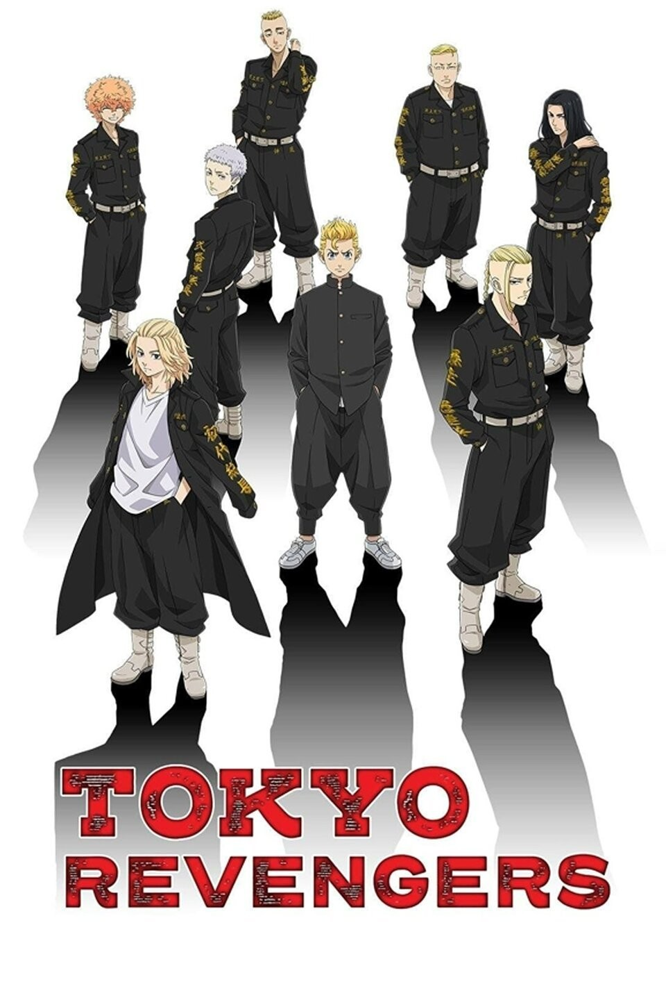

Tokyo Revengers season 1
Selengkapnya
Tokyo Revengers season 1 merupakan Karakter utama dalam anime ini adalah Hanagaki Takemichi, seorang pria berusia 26 tahun yang tidak sengaja menemukan kemampuannya untuk kembali ke masa lalu dengan bantuan Naoto. Namun, ia hanya bisa melintasi waktu tepat 12 tahun di masa lalu, terhitung dari tanggal ia melintasi waktu dari masa depan. Takemichi berjuang untuk menyelamatkan teman-temannya di masa lalu agar menemui kehidupan yang bahagia di masa depan. Selengkapnya, simak rangkuman berikut ini.
Selengkapnya
 Tokyo Revengers season 2
Tokyo Revengers season 2Tokyo Revengers season 2 merupakan kelanjutan dari musim sebelumnya yang mengisahkan tentang Takemichi Hanagaki. Setelah berhasil mengungkap konspirasi di antara geng-geng kejahatan yang ada di Tokyo, Takemichi kembali harus menghadapi musuh-musuh baru yang lebih kuat dan berbahaya.Untuk menyelamatkan teman-temannya dan mencegah tragedi yang akan terjadi di masa depan, Takemichi harus menggunakan kemampuan time leap-nya sekali lagi. Dalam perjalanan ini, Takemichi akan menghadapi tantangan yang lebih besar dan mengungkap rahasia-rahasia yang masih tersembunyi yang berhubungan dengan geng BLACK DRAGON dan keluarga Shiba.
Selengkapnya